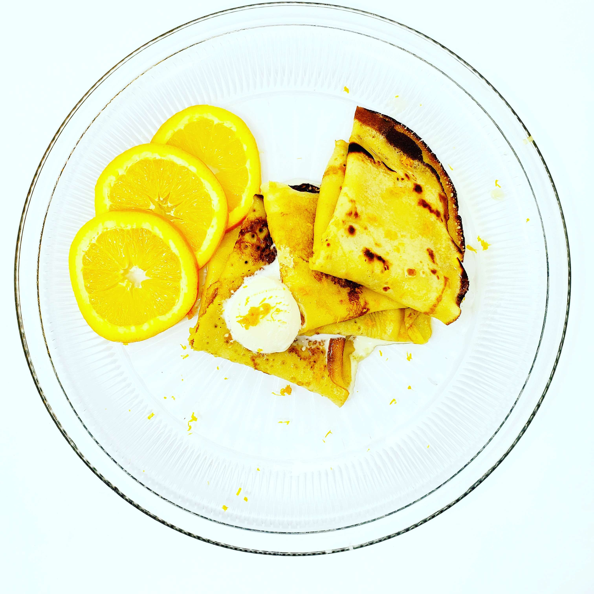

Crepes Suzette
Crepes Suzette is a classic crepe recipe that is flambeed in a sweet orange sauce. Perfect for special occasions.
Ingredients
For the crepes:
- 2 large eggs
- 1 cup all-purpose flour
- 1 cup whole milk
- 1/3 cup water
- 1 teaspoon sugar
- 1/4 teaspoon vanilla extract
- 1/2 teaspoon salt
- 2 tablespoons unsalted butter, melted plus more for brushing pan
For the sauce:
- 1/2 cup unsalted butter
- 1/2 cup granulated sugar
- 1/4 cup orange juice
- Zest of 1 orange
- 1/4 cup Grand Marnier or other orange liqueur
Instructions
- Put all crepe ingredients into a blender and blend until smooth. Consistency will look like heavy cream.
Add more milk or flour as needed. Cover and let rest at least 30 minutes. - Heat a non-stick skillet over medium heat and brush with melted butter. Pour 1/4 cup of batter into the pan and swirl to coat the bottom.
Cook until edges are dry and lightly browned, about 1-2 minutes. Flip and cook for another 30 seconds.
Repeat with remaining batter, brushing pan with more butter as needed. - For the sauce, melt the butter over medium heat in a medium saucepan. Add sugar and stir until dissolved.
Add orange juice and zest and stir. Remove from the heat and add the liqueur. Put back onto the heat and ignite the liqueur to burn off the alcohol (if desired). - Take 4 or 5 crepes, fold them in half, and add them into the sauce. Spoon sauce over the crepes. Repeat with remaining crepes.
- Serve immediately and enjoy!